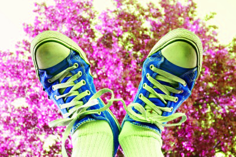
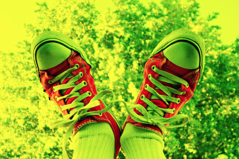

2. Image Processing Practice¶
Quick Overview of Day
Use nested loops to practice simple image processing.
CS20-CP1 Apply various problem-solving strategies to solve programming problems throughout Computer Science 20.
CS20-FP1 Utilize different data types, including integer, floating point, Boolean and string, to solve programming problems.
CS20-FP2 Investigate how control structures affect program flow.
CS20-FP3 Construct and utilize functions to create reusable pieces of code.
2.1. Nested Loop Review¶
In the previous section, we used a lot of nested loops, which is a loop inside another loop. Use what you learned from that section to answer the following:
image-processing-practice1: In the following code, how many lines does this code print?:
for i in range(4):
for j in range(3):
print(i, j)
- 0 0
- Try again! This would be the first thing printed.
- 4 3
- Try again! Remember that when using range, the numbers will go up to, but not including, the value passed to range. This is because the first number will be a 0.
- 3 4
- Try again! Consider which loop is using the variable i as it's counter.
- 3 2
- Great!
- 2 3
- Try again! Consider which loop is using the variable i as it's counter.
image-processing-practice2: What is the last line that the following code will print?:
for x in range(4):
for y in range(3):
print(x, y)
- The window will slowly be filled in from top to bottom with red pixels.
- Try again! Notice that the y value will iterate entirely through the loop before the x value iterates at all.
- The window will slowly be filled in from bottom to top with red pixels.
- Try again! Remember that the origin is on the top left side of the image, and range begins counting at 0.
- The window will slowly be filled in from left to right with red pixels.
- Great!
- The window will slowly be filled in from right to left with red pixels.
- Try again! Remember that the origin is on the top left side of the image, and range begins counting at 0.
- No animation will be shown. The window will simply show up as all red pixels.
- Try again! This would happen if img.draw(win) was NOT inside the nested for loop.
image-processing-practice3: When you run this code, what will the animation look like?:
import image
width = 400
height = 300
win = image.ImageWin(width, height)
img = image.EmptyImage(width, height)
for x in range(width):
for y in range(height):
new_pixel = image.Pixel(255, 0, 0)
img.set_pixel(x, y, new_pixel)
img.draw(win)
2.2. Warmup Problems¶
Note
Your teacher may choose to work through the following problems to help build your confidence before you attempt the practice problems.
2.2.1. Gray Scale¶
See if you can create a gray scale version of the image. When looking at each pixel, you should average the red, green and blue intensities and then using that average value for setting the new red, new green, and new blue intensities. Note that any RGB value that contains the same value for it’s R, G and B amounts will be a gray value. For example, (50, 50, 50) is a dark gray, and (200, 200, 200) is a lighter gray.
One possible solution is as follows:
import image
img = image.Image("skflag.png")
width = img.get_width()
height = img.get_height()
canvas = image.ImageWin(width, height)
img.draw(canvas)
for y in range(height):
for x in range(width):
p = img.get_pixel(x, y)
# adjust the following to apply your image processing
r = p.get_red()
g = p.get_green()
b = p.get_blue()
average = (r + g + b) / 3
new_pixel = image.Pixel(average, average, average)
img.set_pixel(x, y, new_pixel)
# unindent the following line to remove the "animation"
img.draw(canvas)
2.2.2. Black and White Threshold¶
You can create interesting black and white images by setting a threshold (if the sum of the intensities is larger than some value) and choosing to either insert a white pixel or a black pixel at the current location. For example, if you use the skflag.png image, it looks like this originally:

If you look at every pixel to find the sum of the red, green, and blue values, then insert a black pixel whenever the sum is greater than 200 (or a white pixel if it is not), you will create the following image:
One possible solution is as follows:
import image
img = image.Image("skflag.png")
width = img.get_width()
height = img.get_height()
canvas = image.ImageWin(width, height)
img.draw(canvas)
for y in range(height):
for x in range(width):
p = img.get_pixel(x, y)
# adjust the following to apply your image processing
r = p.get_red()
g = p.get_green()
b = p.get_blue()
if r + g + b > 200:
new_pixel = image.Pixel(0, 0, 0)
else:
new_pixel = image.Pixel(255, 255, 255)
img.set_pixel(x, y, new_pixel)
# unindent the following line to remove the "animation"
img.draw(canvas)
2.3. Practice Problems¶
As we have seen, nested loops allow us to look through all of the pixels for an image. You will need to use a nested for loop for each of the following practice problems. Although you could copy/paste much of the same template code for these problems, try to write out a full solution from scratch for at least 3 of the problems!
For the following problems, use one of these images:
skflag.png

moon.jpg

sneakers.jpg

rooster.jpg
2.3.1. Red Remover¶
Write a program that opens an image and uses a nested loop to look at all of the pixels. For each pixel, you should remove all of the red intensity from the pixel. The green and blue intensities should remain unchanged.
If you are using the sneakers.jpg image, your solution should look something like this:
2.3.2. Color Swapping¶
Write a program that sets the red value to the original green value, the green value to the original blue value, and the blue value to the original red value.
If you are using the sneakers.jpg image, your solution should look something like this:
2.3.3. Keep the Green¶
Write a program that keeps only the green values of all pixels in the image.
If you are using the sneakers.jpg image, your solution should look something like this:

2.3.4. Half Red¶
Write a program that sets each pixel’s red intensity to be half of the original value. The green and blue intensities should remain the same as in the original image.
If you are using the sneakers.jpg image, your solution should look something like this:
2.3.5. Combining Bits of Colors¶
Write a program that sets each pixel’s blue intensity to be an eighth of the original green value plus an eighth of the original red value. The red and green intensities should remain the same as in the original image.
If you are using the sneakers.jpg image, your solution should look something like this:
2.3.6. Half Each Color¶
Write a program that sets each pixel’s RGB intensities to be half of their original value.
If you are using the sneakers.jpg image, your solution should look something like this:
2.3.7. Sepia¶
Write a program that converts an image using a sepia filter (Sepia Tone).
If you are using the sneakers.jpg image, your solution should look something like this: